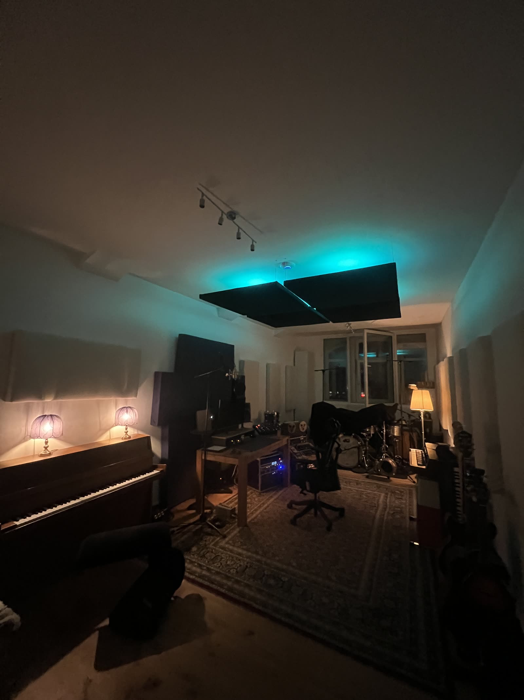
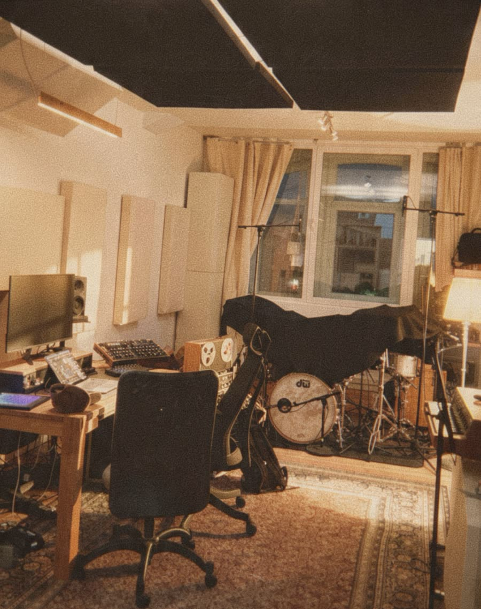
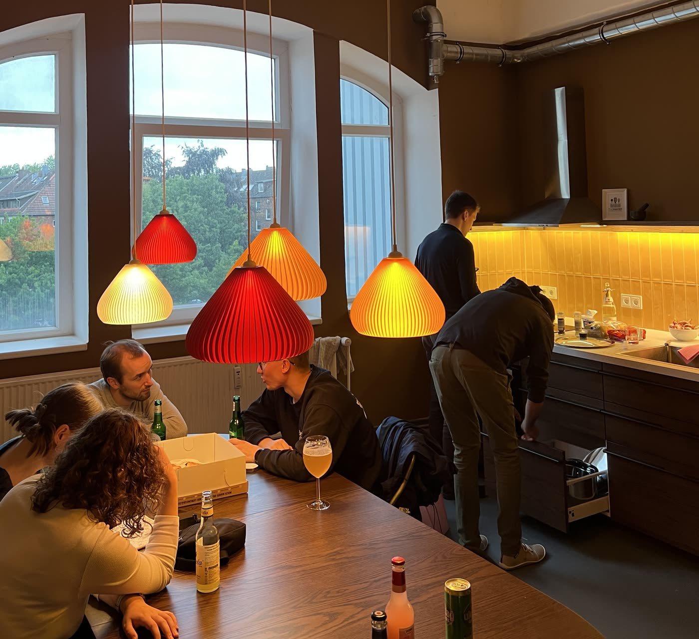

Recording Studio Hamburg
A room for bands, singers and instrumentalists in Hamburg. Track it here, mix it here, master it here. One person who knows your song from the first take to the master.
Check availability
Acoustically treated, with an upright piano, a drum kit and vintage amps ready to go. Everything is set up and mic'd, so you spend your day playing instead of waiting.

I have been producing music for 13 years and I run this room myself. The person you talk to before the session is the person behind the desk during it, and the one who mixes it afterwards. Nothing gets handed over and explained twice.
Full band, overdubs or a single vocal. Half or full days.
Arrangement, additional instruments and programming where a song needs it.
Finished in the same room it was recorded in, on monitors I know.

Recording somewhere else and only need the mix? That works too. Send your stems and I take it from there.
Write what you want to record and when. You get a date, a fixed day rate and a plan for the session before you commit.
Get in touch